경계를 구하는 네 단계
Gaussian노이즈 완화
Sobel미분·기울기
NMS경계 얇게
Hysteresis연결 판단
Canny는 픽셀 밝기가 임계값 이상인지 확인하는 단순 Threshold가 아닙니다. 밝기 변화의 크기·방향에서 경계 후보를 구하고 이웃 방향의 강·약 연결 관계를 평가합니다.
그림으로 이해하기


경계를 구하는 네 단계 · 핵심 동작
Canny는 원본 밝기 자체를 하나의 임계값과 비교하는 분할과 다르게 밝기 변화의 위치를 찾습니다. 먼저 가우시안으로 노이즈를 완화하고 Sobel 미분으로 x·y 방향 기울기를 구합니다. 기울기 크기는 √(Gx²+Gy²)이며 밝기가 일정한 영역에서는 대체로 작고 급격한 변화 부근에서 커집니다.
경계를 구하는 네 단계 · 입력과 결과
다음 단계인 비최대 억제는 기울기 방향을 따라 비교해 넓은 응답에서 국소 최대 후보를 남깁니다. 이어지는 이중 임계값 연결은 높은 기준을 넘은 강한 후보에서 시작해 연결된 약한 후보를 추적합니다. 그 결과는 객체의 면적을 표시한 마스크가 아니라 경계 위치를 표시한 Gray8 영상입니다.
경계를 구하는 네 단계 · 좌표와 소유권
가우시안 폭과 σ를 크게 하면 노이즈를 줄일 수 있지만 작은 경계도 약해집니다. 낮은 임계값을 지나치게 내리면 원하지 않는 응답이 연결될 수 있고 높은 임계값을 지나치게 올리면 연결 시작점이 부족할 수 있습니다. 입력 강도 범위가 달라지면 Sobel 크기도 달라지므로 숫자를 그대로 옮기지 마십시오.
경계를 구하는 네 단계 · 오류와 판단
영상의 한 변이 3보다 작으면 이 구현은 유효한 인자를 확인한 뒤 빈 에지 영상을 반환합니다. 그것을 경계가 검출되지 않았다는 측정 사실로만 해석하지 말고 입력 크기도 함께 확인하십시오.